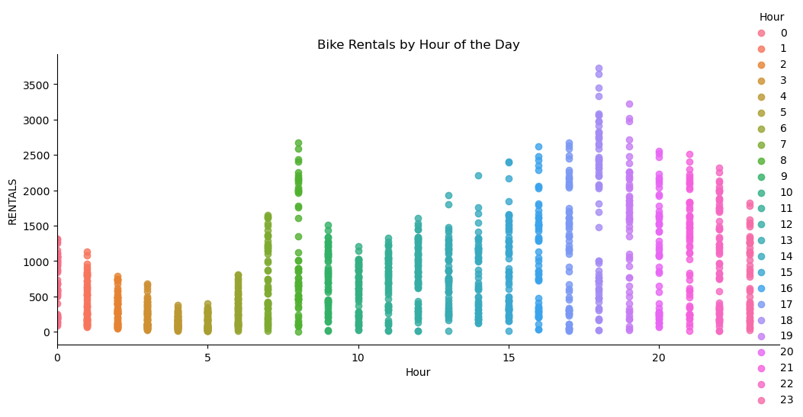
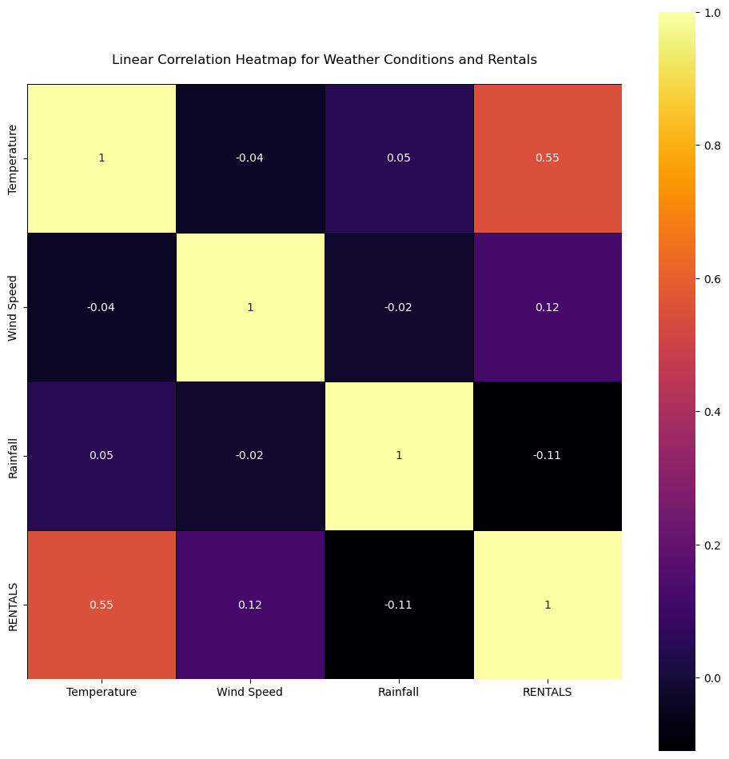
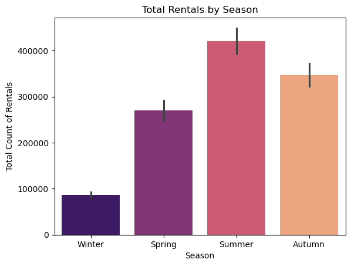

Bike Rental Demand Analysis
Python Project by Grecia Zarella Alvarez Leyva

1. Introduction
The rental bike industry emerged strongly in 2020 as a safe and flexible mobility alternative. Today, it is a key solution for students and professionals. This project utilizes Python to identify demand patterns influenced by weather and time, providing strategic insights for fleet optimization and expansion into emerging markets like Latin America.
2. Methodology
Using a dataset of 1,387 records, the analysis followed these steps:
- Data Cleaning: Handled with Pandas to ensure integrity in the 14 original variables.
- Statistical Correlation: Calculated coefficients to measure the impact of environmental factors.
- Temporal Analysis: Grouping data by hour and season to find peak usage windows.
3. Key Insights & Visualizations
Click on the images to enlarge
Hourly Demand Peaks
Significant spikes identified at 8:00 AM and 5:00-6:00 PM, confirming high dependency on daily commuting.
Weather Sensitivity
Temperature shows a 0.55 positive correlation, while Rainfall (-0.11) acts as the main deterrent.
Seasonal Performance
Visual comparison of rental volume across seasons, highlighting June as the most profitable month.
4. Actionable Strategy
To maximize ROI and operational efficiency, the following steps are proposed:
- Dynamic Fleet Allocation: Increase supply during Summer peaks and focus on holiday locations in June.
- Commuter Packages: Launch weekday subscription models for the 8 AM / 5 PM user segment.
- LATAM Expansion: Target high-density urban centers in Latin America where micromobility is currently underdeveloped.
5. Conclusion
Rental demand is deeply tied to commuting habits and environmental conditions. By leveraging these data patterns, companies can minimize idle fleet time and successfully scale into new, high-potential regions.